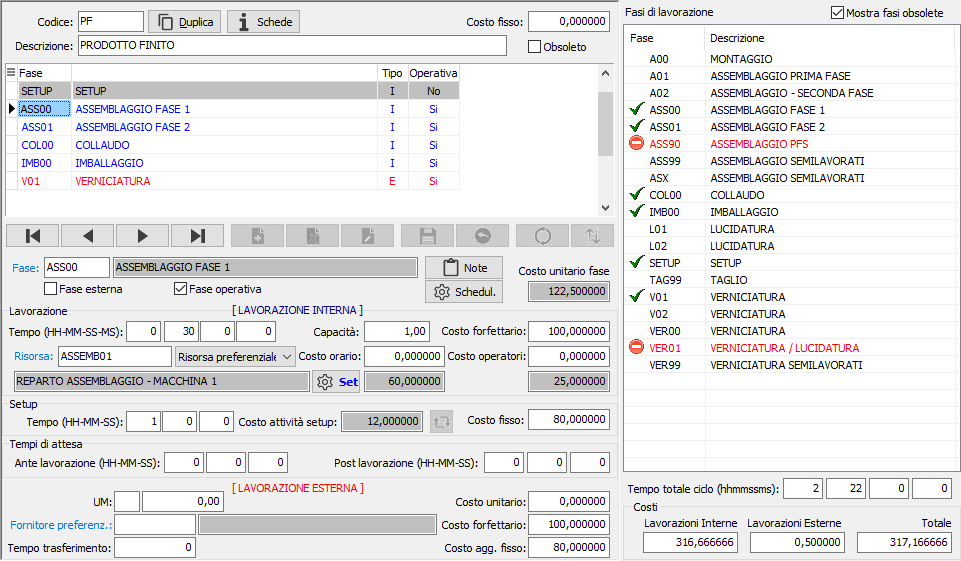
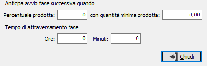
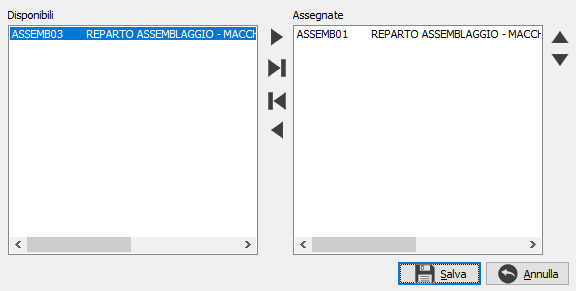
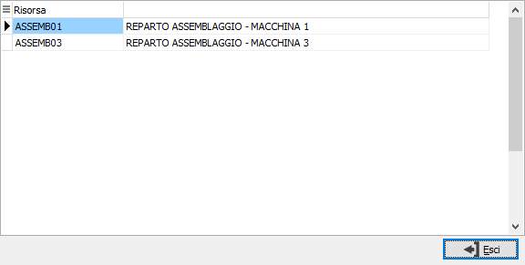
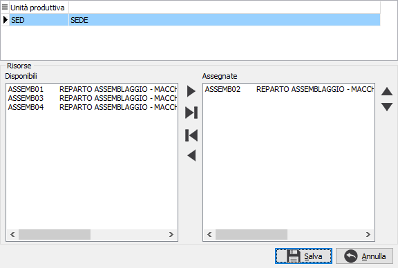
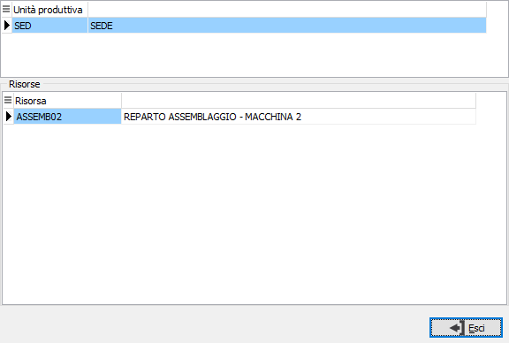

Cicli di produzione
Il ciclo di produzione determina tempi e costi delle fasi necessarie per la produzione della scheda tecnica. Possono essere gestite sia fasi interne che fasi esterne; è possibile anche indicare fasi non operative (utilizzate quindi solo per la preventivazione, ma che non danno luogo ad ODL).
Ogni fase operativa del ciclo di produzione determina in fase di generazione piano la generazione di un ODL.
Una volta che un ciclo è stato utilizzato all'interno di un ODP non possono essere più variati i tempi.


Se presente il modulo di Schedulazione sarà visibile il relativo pulsante che consente impostare i parametri per gestire la sovrapposizione delle fasi ed il tempo per le fasi non schedulabili. L'entità dell'anticipo nell'avvio della fase successiva è definito a livello di ciclo e/o a livello di fase mediante l'indicazione di una percentuale sulla quantità prodotta con la possibilità di specificare eventualmente anche una quantità minima unitaria. Se le informazioni non vengono compilate (né per il ciclo né per la fase la sequenza di produzione è comunque FinishToStart (avvio la fase successiva al completamento della fase corrente). Per la gestione delle fasi non schedulabili, sono presenti i campi ore e minuti di attraversamento fase, dove indicare il tempo relativo alla durata della fase; il tempo non è legato alla quantità ed è utilizzato dalla schedulazione per consentire di mostrare la fase per le risorse non schedulabili (ad esempio nesting) nel Gantt per ODP. Se presenti dei valori il pulsante si colora di blu.
Per aggiungere le fasi di produzione si può procedere manualmente inserendo il codice della fase, oppure trascinando la fase dall'elenco a destra o facendo doppio clic sulla fase presente nell'elenco a destra; nell'elenco delle fasi sono evidenziate in rosso eventuali fasi obsolete che possono non essere mostrate se si toglie la spunta alla casella "Mostra fasi obsolete". Nella parte sottostante all'elenco delle fasi viene riepilogato il tempo totale del ciclo.
Fasi interne
Devono essere indicati i tempi di lavorazione (espressi in ore/minuti/secondi/millisecondi) e l'eventuale tempo di setup; è necessario indicare anche una risorsa (macchina), che può essere preferenziale oppure obbligatoria, su cui la lavorazione verrà eseguita (ai fini della valorizzazione scheda tecnica) viene proposta in automatico la risorsa preferenziale del gruppo fasi in cui la fase è presente. Se la risorsa è obbligatoria non sarà mai possibile cambiarla, altrimenti la modifica della risorsa è prevista nelle seguenti fasi:
Manutenzione ODL (all'interno della gestione piano) a condizione che l'ODL stesso non sia già stato lanciato;
Manutenzione movimenti bordo macchina (escluso i movimenti derivanti da OS1BMJob);
Registrazione manuale versamenti.
Se sulla fase è spuntato "Fase a capacità" sarà abilitato il campo Capacità, l'indicazione di un valore diverso da 1 sul ciclo di lavorazione determina un diverso calcolo del tempo di lavorazione.
Questo significa che per eseguire una determinata lavorazione impiego la stessa quantità di tempo sia a lavorare un pezzo che a lavorare fino ad un massimo di n pezzi. In questo caso il tempo di lavorazione è legato ad una quantità che .
I costi orari di lavorazione (distinti fra costo risorsa e costo operatori) possono essere indicati sulla fase del ciclo oppure lasciati vuoti in modo da utilizzare i due valori previsti a livello di risorsa mostrati a video.
Nella sezione Setup è presente il tempo di setup e l'eventuale costo fisso; il campo “Costo attività setup” viene calcolato tramite l’utilizzo delle attività di setup eventualmente presenti sulla risorsa preferenziale: vengono ricercate le attività di setup, letto il costo orario alla data di accesso, moltiplicato per il numero di addetti e per la percentuale di utilizzo; la somma di questi valori delle varie attività danno luogo al costo attività setup. È presente anche un pulsante che consente l’aggiornamento del campo Costo fisso applicando il costo attività setup al tempo di setup presente; il calcolo avviene rapportando il tempo a secondi e moltiplicandolo per il costo/3600.
Come specificato in precedenza, se la risorsa associata alla fase interna del ciclo è di tipo preferenziale, è possibile utilizzare in sostituzione della risorsa indicata qualsiasi altra risorsa associate al gruppo fasi cui la fase appartiene, ma è anche possibile restringere l'ambito delle risorse alternative utilizzando un set di risorse riservato alla fase del ciclo. Tramite il pulsante Set si richiama la finestra di assegnazione set da cui è possibile assegnare le risorse previste per il gruppo fase al set che si sta componendo; in visualizzazione del ciclo se è presente un set di risorse il pulsante appare evidenziato e premendolo viene mostrato il set con le risorse incluse. La gestione dei set è diversa a seconda che sia gestita una o più unità produttive; in quest'ultimo caso le risorse compaiono in base all'unità produttiva su cui si è posizionati; se viene richiesta la risorsa obbligatoria, dovrà essere effettuata l'assegnazione di almeno una risorsa per ogni unità produttiva.
 |
 |
 |
 |
Fasi esterne
Può essere indicato il tempo di trasferimento, l'eventuale fornitore preferenziale ed il costo di lavorazione.